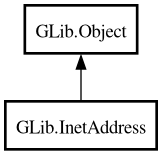

InetAddress
Object Hierarchy:

Description:
[
CCode ( type_id =
"g_inet_address_get_type ()" ) ]
public class InetAddress :
Object
Content:
Properties:
Creation methods:
Methods:
Inherited Members:
All known members inherited from class GLib.Object